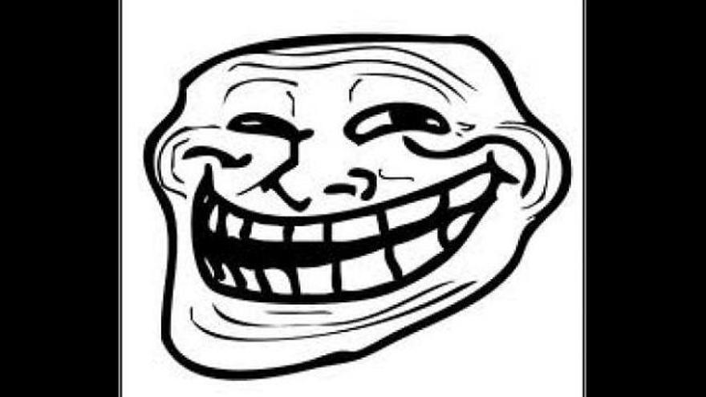

Por que memes? Escolhi os memes como sendo algo que me inspiram, pois me inspiram ao bom humor e a criatividade, estão ligados às mídias sociais e à tecnologia. Os memes são democráticos etc etc etc
“Um meme é uma imagem transmitida para viralizar na internet, complementada com texto, compartilhando comentários pontuais sobre símbolos culturais, ideias sociais ou eventos atuais.
É normalmente uma foto ou vídeo, embora possa ser um bloco de texto. Quando atinge muitas pessoas, ele se espalha por meio de plataformas sociais como Twitter, Facebook, Instagram, mensagens de texto, entre outros. Quanto mais um meme é difundido, maior é a influência cultural que ele tem.”
Tecnoblog
Etimologia (origem da palavra meme). Do grego mimema, imitação; pelo inglês meme. Dicio
Memes são imagens compartilhadas para viralizar. Apesar de ter começado como imagens estáticas com os personagens TrollFace, hoje também podem ser memes as fotos, vídeos, textos (geralmente combinados com imagens) e gifs que são vídeos curtos que se repetem.
Meme TrollFace
Coletânea de memes antigos
Glória Maria em reportagem na Jamaica, em que experimentou maconha.
Meme Dorime
Felipe D'Ávila, candidato à presidência na eleição de 2022 em debate.
Existem os memes dentro de memes, memes combinados, infinitas variações, o que a criatividade mandar. Um exemplo é este vídeo com várias versões do meme da Gretchen na escada.
Gretchen mostra o look para o prêmio Multishow em 2018.
Variação de meme da Gretchen em 2023.
acho que temos aqui um novo meme nível "gretchen no prêmio multishow" hein pic.twitter.com/wSFTk3Y0Su https://t.co/cHjKr7XiO1
— SUB DA ADA WONG (@FeehGarcia) March 25, 2023
Fuon, Fuen, Fuan. É isto, obrigada por ler até aqui!